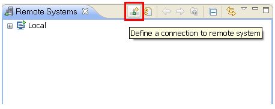
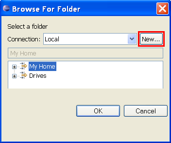

Connecting to a Remote RDT Server
Creating a connection from the Remote Systems view
The Remote Systems view is by default part of the Remote C/C++ perspective.
To open this perspective from the workbench menu, click Window > Open Perspective > Remote C/C++.
Alternatively, to open the Remote Systems view regardless of which perspective is active;
from the workbench menu click Window > Open View > Remote Systems.
In the Remote Systems view, click the New Connection toolbar button.

Creating a connection from the RSE Browse Dialog
Alternatively it is also possible to create a connection from the RSE
remote system file browse dialog. This dialog can be launched from the
New Remote C/C++ Project Wizard.

Creating a Connection
Either action will launch the Select Remote System Type dialog. From this dialog you may
create a new connection.
-
Choose either Linux, Unix or Windows as
the server type depending on the operating system that is hosting the RDT sever. For MacOS X choose
Unix as the system type. Do not choose SSH, Telnet or FTP as the RDT server will not work with these
connection types (RDT requires a dstore connection).
-
Enter a name for your first profile and click Next. (This step only occurs if you have never defined a connection before.)
-
Enter a connection name. This name displays in your tree view and must be unique to the profile.
-
Enter the name or TCP/IP address of your server in the Host name field.
-
(Optional) Enter a Description. The description appears in the Properties view after the connection is created.
-
Click Next.
-
On the second page of the New Connection Wizard click Launcher Properties under the Available Services
section. The properties section of the dialog can be used to specify if the connection is to a
daemon server or to a standalone (manually started) server.
-
Click Finish to define your system. The new connection will appear in the Remote Systems View.
-
To activate the connection right click on the connection name in the Remote Systems view
and select Connect. You may be prompted for a username and password.
Once a connection has been created it may still be necessary to define the port
and other properties for the connection.